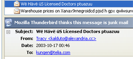
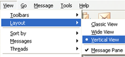
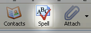
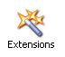
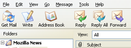

為什麼您該改用 Mozilla Thunderbird 電子郵件程式
Mozilla Thunderbird 讓傳送電子郵件變得比過去更加安全、迅速且容易，因為它在同類軟體中技冠群雄，包括「智慧型垃圾郵件過濾」、內建的拼字檢查、對擴充套件的支援和其他更多功能。
用心投入只為您
我們為提高您的生產力而設計 Mozilla Thunderbird ，這也是它如此易用的原因。Thunderbird 恰好可以幫您完成工作，免去在廣告、垃圾信間披荊斬棘的麻煩。寄送電子郵件就該是愉快又方便的，而我們使用完全開放且領先業界的標準，使這個目標得以實現。請繼續閱讀，了解更多該以 Mozilla Thunderbird 作為郵件／新聞群組程式的理由。
輕鬆擋下垃圾郵件
Mozilla Thunderbird 幫您除去垃圾郵件，收件匣中只留下有用的信件。 受夠收件匣中的垃圾郵件和煩人廣告信了嗎？Mozilla Thunderbird 提供最能有效偵測垃圾郵件的工具。我們的工具會分析您的郵件，並找出最有可能是垃圾的幾封。您可以決定要自動刪除這些垃圾郵件，或是放到特定的資料夾中。 要啟動「垃圾郵件過濾器」（Junk Mail filters），請選擇 「工具＞垃圾郵件控制…」選項，接著點選「漸進式過濾器」的分頁、勾選「偵測垃圾郵件」。 郵件，隨您所欲
我們加入了三欄檢視模式，方便您取用電子郵件。 看信件的方式可以隨心所欲！您可以在三種不同的訊息閱覽模式中挑一種：可以選擇工具列的佈局（layout）、可以自訂工具列的按鈕、還可以使用「郵件檢視」（Mail Views）快速令郵件依序排列。 總之，這些功能能提升您的生產力、讓您做事更有效率，這也是 Mozilla Thunderbird 的設計理念。 內建拼字檢查
聰明的拼字檢查器確保您的信件專業有水準。 再也不需要協力廠商提供拼字檢查軟體了。Mozilla Thunderbird 整合了由 Spellchecker Mozdev Project 開發的拼字檢查器，您只需要做點擊工具列上的「拼字」按鈕，Mozilla Thunderbird 就會幫您搞定。 安全，萬無一失Mozilla Thunderbird 提供企業和政府層級式的保安功能（grade security features），例如S/MIME、數位簽章（digital signing）、訊息加密（message encrypting）、對憑證（certificates）及安全裝置（security devices）的支援。 Mozilla Thunderbird 預設不讓郵件中的程式碼（scripts）執行，這使其比市場上其他同類軟體更為安全，也有助於停止蠕蟲和病毒在網路上繼續散佈。 |
擴充套件，功能無限！
您希望郵件程式有多少功能？ 您說了算！ Mozilla Thunderbird 本身已經有完整的功能，如支援 IMAP/POP、支援HTML 格式郵件、標籤、快速搜尋、聰明通訊錄、郵件回條、更先進的來訊過濾、LDAP 信箱地址自動完成、匯入工具、強大的搜尋，以及管理多個電子郵件及新聞群組帳號的能力。 除此之外，透過擴充套件，Mozilla Thunderbird 讓您能加入所需要的附加功能。擴充套件正是幫助您打造一個郵件用戶端程式，符合您獨特需求的強大工具。請瞧瞧各種 可用的套件。 整合新聞閱讀軟體Mozilla Thunderbird 不只是個郵件軟體，也是一個 Usenet 新聞群組閱讀器！它支援所有基本的功能，例如訂閱新聞群組、下載標題及訊息內容、離線閱讀等，並可監看或忽略個別討論串。 用佈景主題來營造個人風格！
使用介面的任何部份都可以用佈景主題來更換。 有了佈景主題，您就能改變 Mozilla Thunderbird 的外觀。佈景主題可以簡單到只更換工具列的圖示，也可以徹底改變整個應用程式的每一寸外觀。您可以下載並安裝佈景主題，只消點幾下滑鼠便可完成。 跨平台技術您用 Windows、Linux 或是麥金塔？不論您選了哪個作業系統，Mozilla Thunderbird 都能支援。目前它能在Windows 95、98、Me、2000、XP 以及 Linux、MacOS X、OS/2 和 Solaris 上運行。 完全免費Mozilla 基金會 創作自由軟體（亦可稱之為開放原始碼軟體），意思就是說您的使用方式完全不受限制，甚至作為商業用途亦無妨。事實上，連原始程式碼也可以提供給您。 換句話說，您想拿 Mozilla Thunderbird 幹嘛都可以，只要下載就是您的了！ |

除另有註明外，本站內容皆採創用 CC 姓名標示—相同方式分享條款 3.0 台灣版或更新版本授權大眾使用